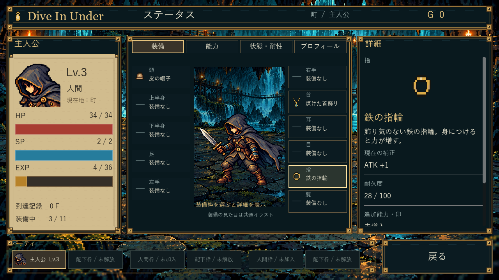

Dive In Under — ステータス画面
0.5.2 開発版 / 1280×720 / Godotの実操作UI。以下は同じ実EXEの画面資料です。
起動後は「続きから」→倉庫の「戻る」→町の「ステータス」。既存の町への入口を維持しています。プレビューは既存アイテムを使った固定セーブです。Lv/HP/SP/EXP/装備補正はゲームの共通計算から表示し、参考画像の数値や経歴は使用していません。
対象CI成功：4タブ・実項目選択・キーボード・戻る・保存不変・別EXE再起動。
完成レイアウトと4タブ
上のタブボタンで実画面を見比べられます。装備画像の点線枠を押すと、その枠を選択した後の詳細へ切り替わります。この資料は画像比較であり、ゲーム本体はControl・Button・Containerで動きます。
装備：頭を選択。クリックしても装備は外れません。
町との遷移
倉庫、装備変更・修理は町の別入口。ステータス内の装備枠は情報確認専用です。
装備枠を選択した前後
前：頭を選択、皮の帽子の補正と耐久64/100。
後：指を選択、鉄の指輪の実効ATK+1・耐久28/100。装備・HP・EXPは不変。
主な操作
| 入力 | 結果 |
|---|
| タブクリック / 1〜4 / Ctrl＋Tab | 同じ画面の中央と右詳細を更新。左情報は維持。 |
| 装備枠・能力名クリック | 選択を金色で固定し右詳細を更新。装備解除なし。 |
| Tab・矢印・Enter | フォーカス移動と項目の確定。青緑の枠でフォーカスを区別。 |
| 詳細欄でホイール | 長い説明を縦にスクロール。 |
| 戻る / Esc | 短いフェードで元の町へ戻る。 |
人間1名＋配下1体を1組とした3組分の表示領域を確保。主人公以外の5枠は無効で、仲間機能を実装していません。8属性は「未設定」、プロフィールの年齢・出身・職業・人物紹介も未設定です。追加画像制作は不要で、採用済みの静止素材を再利用しました。
操作と保存不変の記録 / 別EXE再開 / ビルドSHA